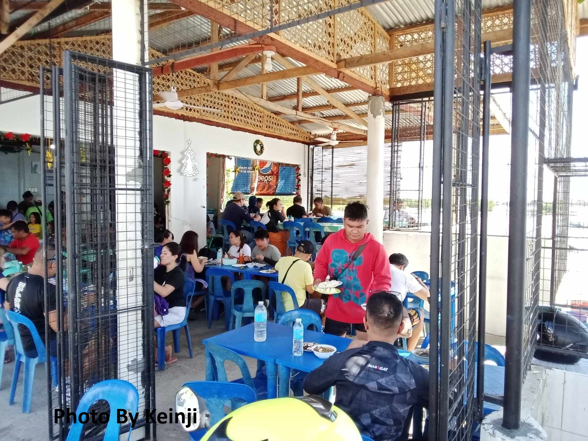
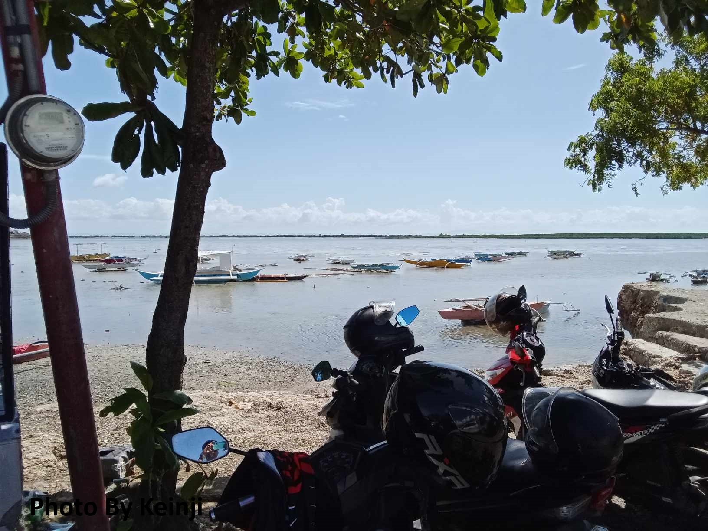
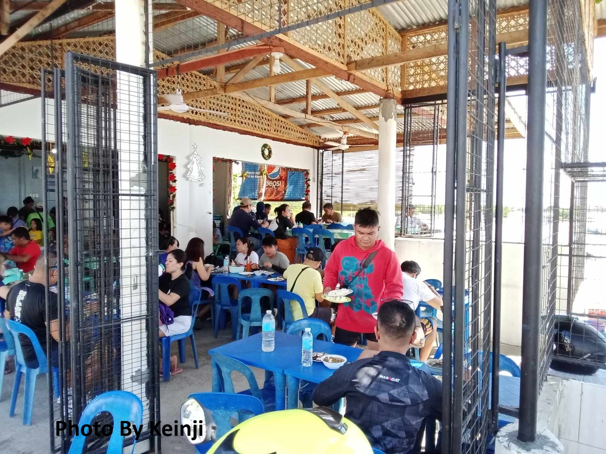
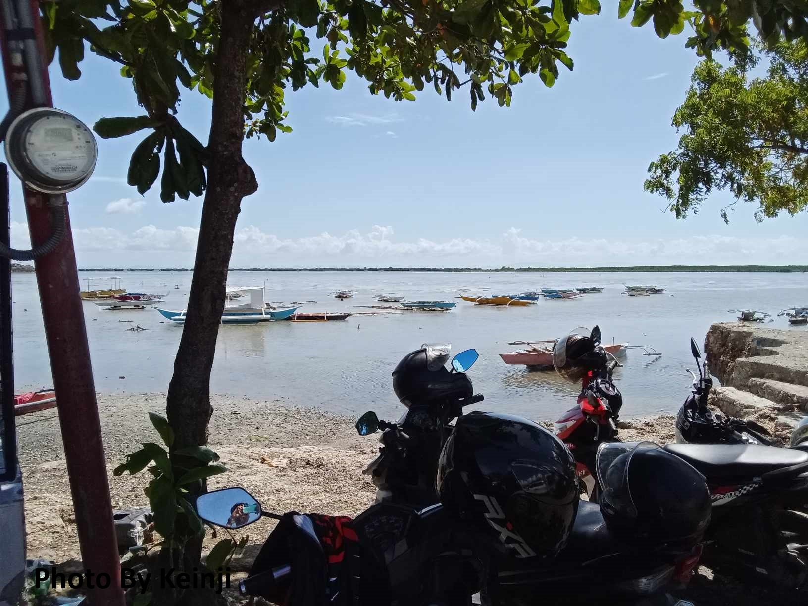

The Entoy’s bakasihan is one of the oldest restaurant serving bakasi in town as the area is abundant with reef eels
because the sea’s tidal flats are mostly grassy and muddy which are conducive to the eel’s sustenance.
One of the main dish is their specialty dish is the Linarang Bakasi (Sour Stew with Reef Eels), which is a perfectly-cooked eel sautéed in soy sauce, green mangoes,
fermented black beans, and soured with tamarind and other secret spices.
Fried Bakasi – crispylicious fried fish which you can easily eat its bone. Taste better when dipped on sauce (combination of soy sauce, vinegar/calamansi & chili).
Saang – they steamed it and the saltiness from the ocean make it a great sign that t’was freshly caught.
These are just some of the many dish to try out something extraordinary with your friends and family, have a stopover here and enjoy the cool breeze of the sea.